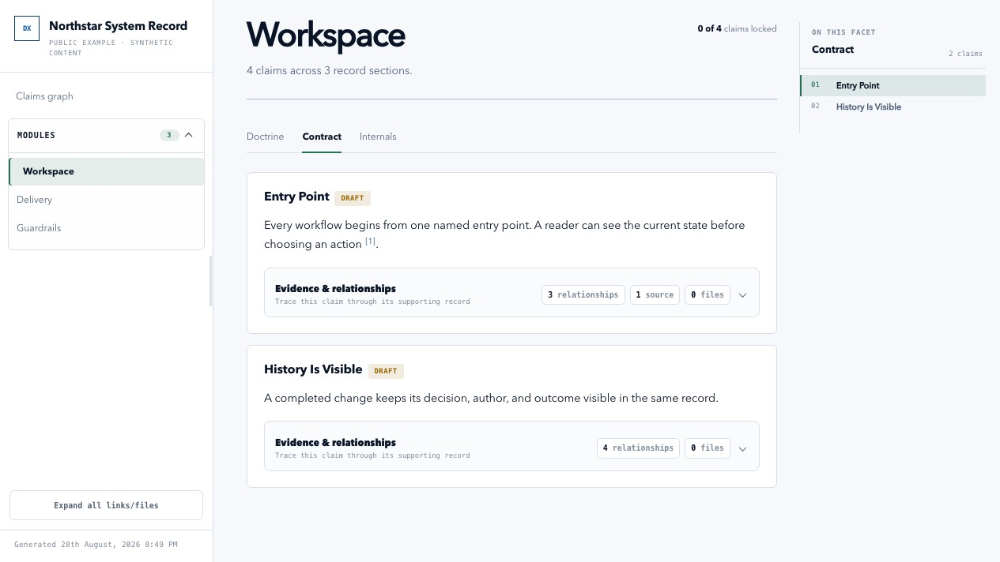
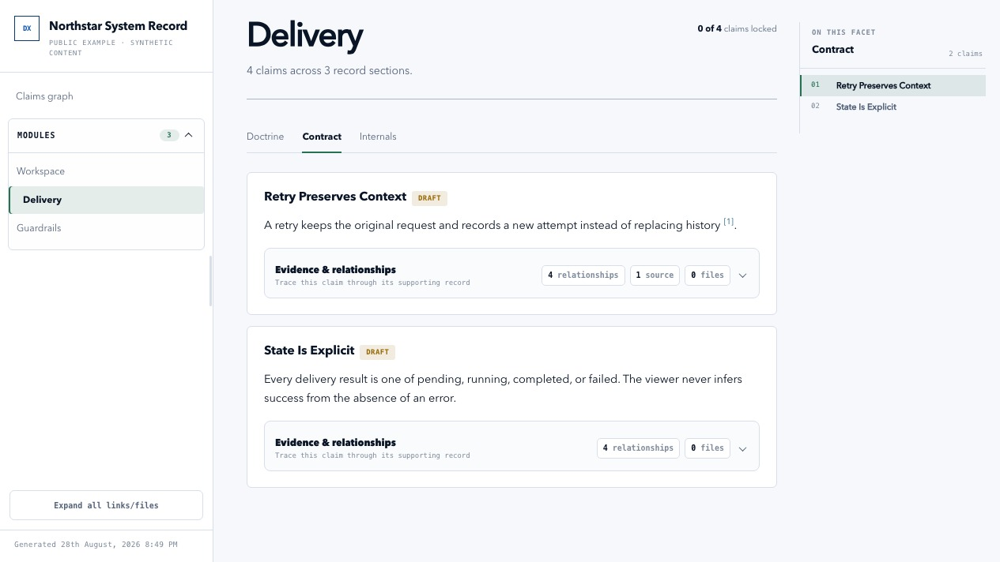
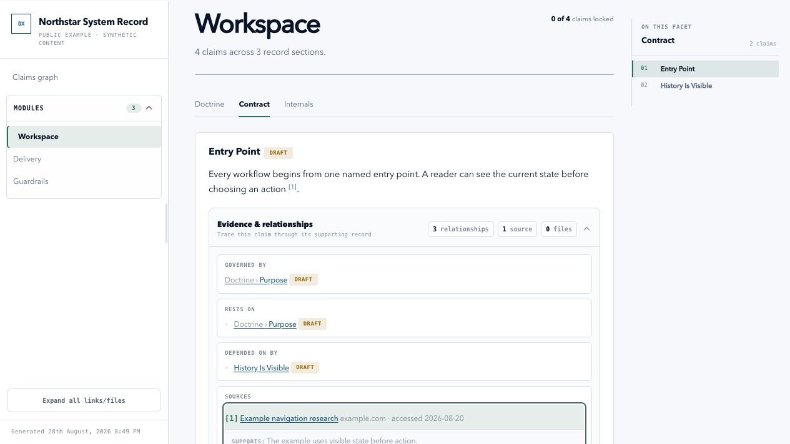
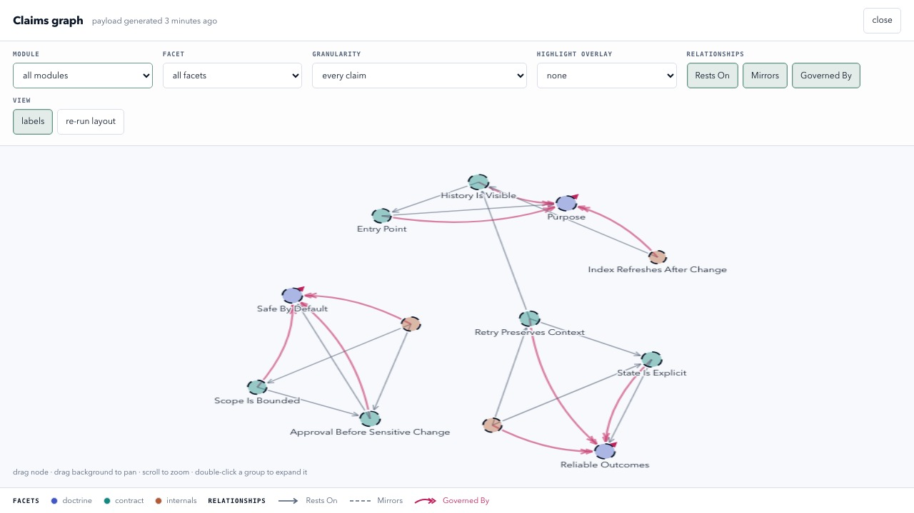

Viewer example
The rules, their sources, and how they connect.
The interface is real. The claims are synthetic, public, and safe to share.
Protected
No customer names, private wording, repository paths, or internal decisions are present.
Shown
The shipped viewer, responsive navigation, evidence records, and claims graph.




Synthetic public example · no private project content was used in these screenshots